Texmaker is a LaTeX editor. You type LaTeX source code into it, and it compiles the code into a PDF document. The following are a set of minimal instructions to get it installed and running.
1) Download Texmaker's Installer
Download http://www.xm1math.net/texmaker/texmakerwin32_install.exe.
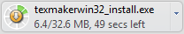.
2) Run Texmaker's Installer
Browse to your downloads folder, and locate texmakerwin32_install.exe.
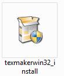
Double-click on texmakerwin32_install.exe to run it. This may require administrative privileges. Once it is running, you should see the following:
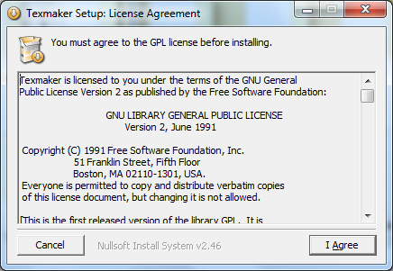
Click "I Agree". You will then be asked to choose a directory:
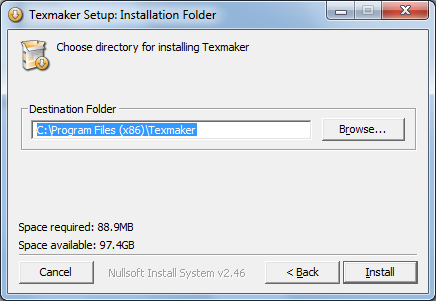
Click "Install". Installation only takes a few seconds:
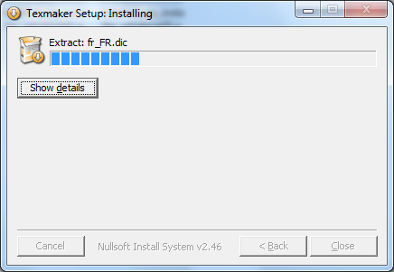
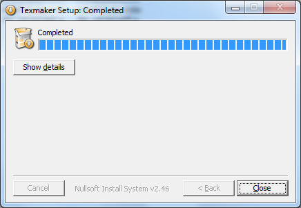
Texmaker is now installed! Click "Close".
3) Run Texmaker
Texmaker should now be in your start menu, and a shortcut should be on your desktop:
| 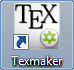 |
Run Texmaker. It should open a window that looks like this:
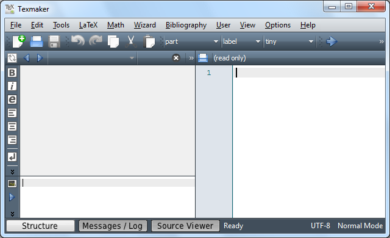
4) Configure Texmaker to use Adobe Acrobat (optional)
By default, Texmaker uses its own PDF viewer to preview documents. If you want to use Adobe Acrobat, do the following.
Note that there is an issue with using Adobe Acrobat: you'll need to close Acrobat each time each time you update your document again. If this is a problem, or if you don't want to use acrobat, you can skip this step.
First, in the menu, choose "Options"→"Configure Texmaker":
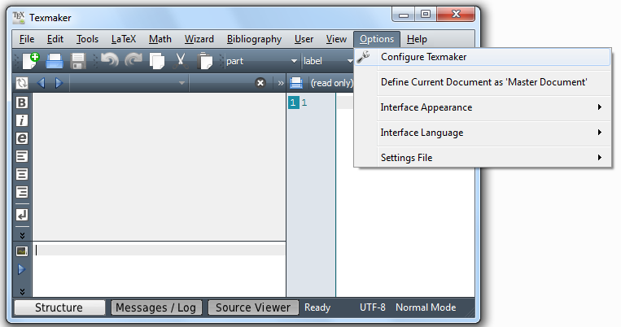
You should see the following dialog:
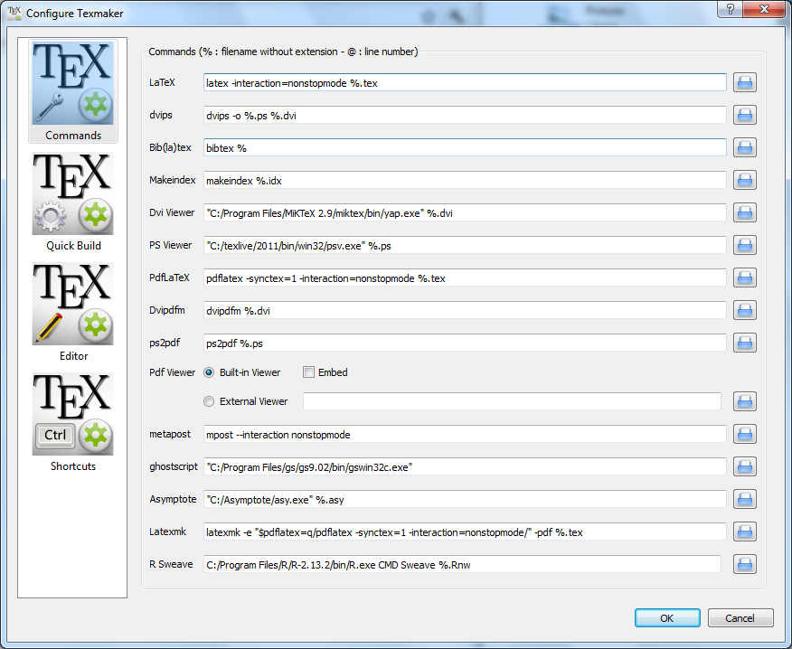
Update the "Pdf Viewer" section to use an external viewer, and enter the path to your Adobe Acrobat executable. Your Adobe Acrobat executable may be in a different directory than shown in this image.
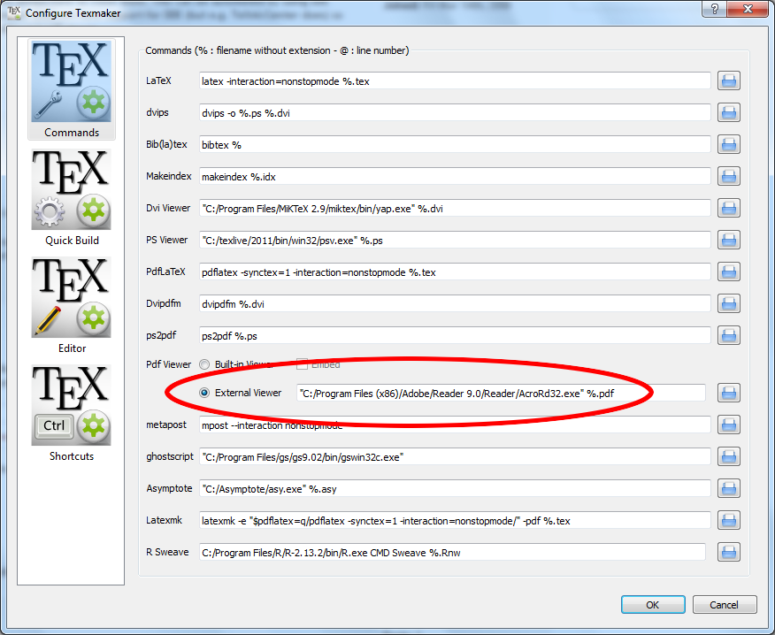
Click "OK". Texmaker will now use Adobe Acrobat as its default PDF viewer.
Next - Create a sample document
Read on to create a sample PDF document.